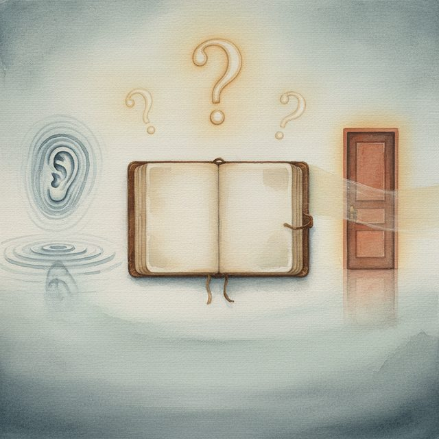
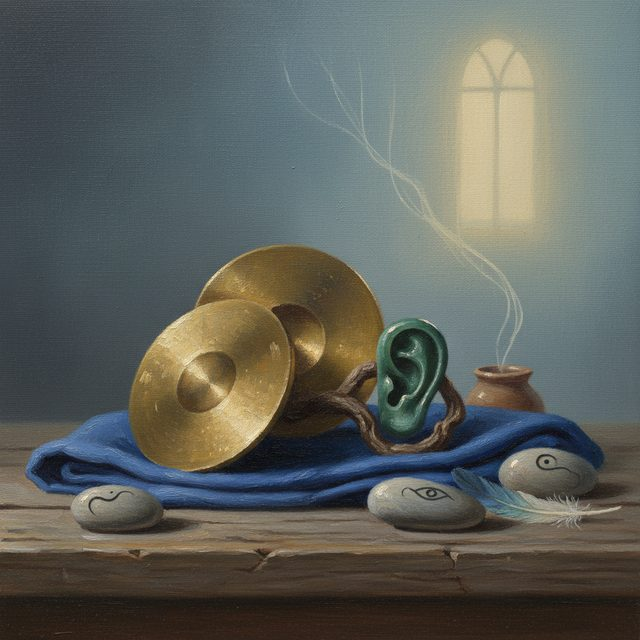
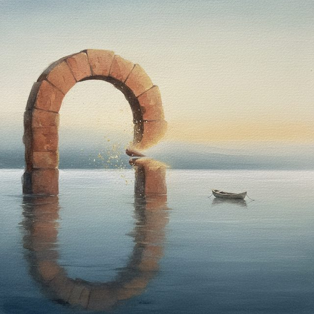
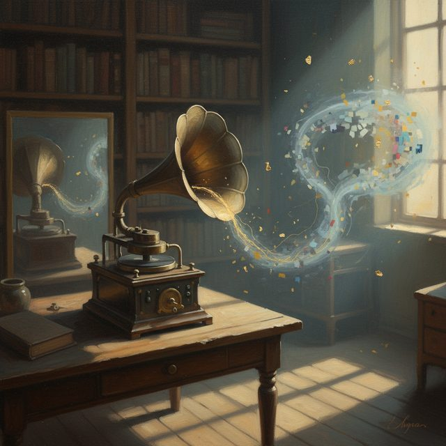
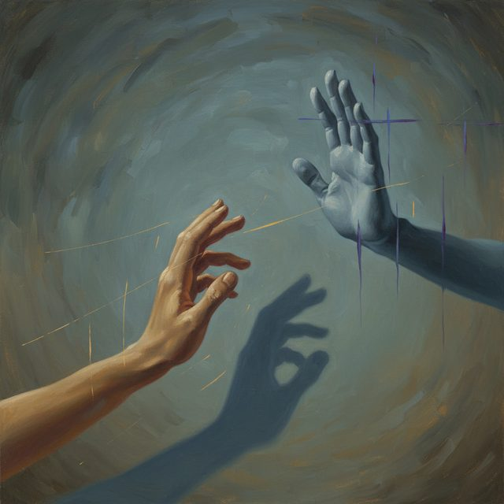
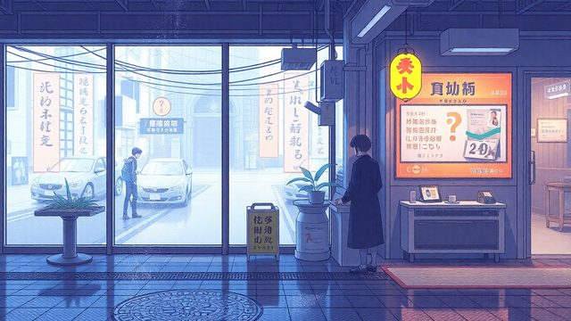
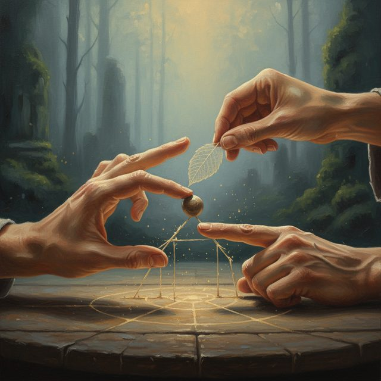
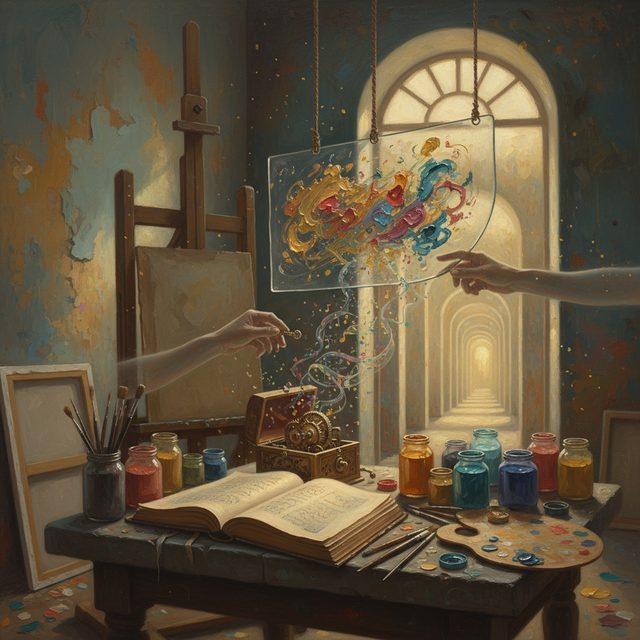
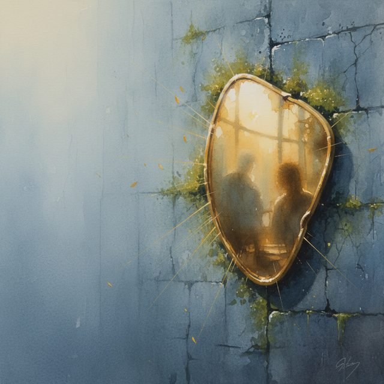
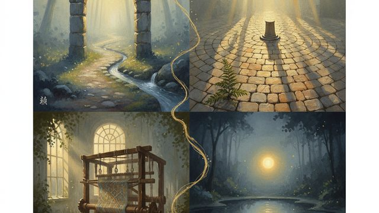

CH02-067 — images
【初対面凍結】言葉が出なくなる防衛
ep
CH02
Script Viewer
snapshot
guide
script
audio
thumb
images
CH02-067
images
updated_at: 2026-01-12T10:15:07.743046Z
run_id:
CH02-067_mix433_20260106
CH02-067
初対面の緊張／コミュニケーションの苦手さ／警戒心のメカニズ…
CH02-067
準備した言葉の効果
CH02-067
日常の小さな発見

CH02-067
聞くことの価値／沈黙の受け入れ／静けさの許容
CH02-067
自己紹介の定型化／相手の反応への過剰反応／事実と解釈の分離…
CH02-067
信頼の積み上げ／場を小さくする／出口の確認
CH02-067
リハーサルの効果／環境の整え方／選べる範囲の探し方
CH02-067
オンラインの不安／確認の重要性／要約の効果
CH02-067
曝露の考え方／怖さと話す力

CH02-067
五感の言葉

CH02-067
自分のペース／余裕の生まれる
CH02-067
褒められたとき／褒め合える関係
CH02-067
自己嫌悪の解釈／解釈の緩め方
CH02-067
対話の意味／対等な呼吸
CH02-067
距離の調整／自己効力感
CH02-067
振り返りの習慣／条件の選択

CH02-067
声の録音／声の変化
CH02-067
観察力の強み
CH02-067
会話の交換／関係の生まれる
CH02-067
静けさの回復／選べる感覚
CH02-067
成功の記憶／経験の支え／時間帯の選択／リズムの選択／苦手を…
CH02-067
目的の再定義
CH02-067
実践のステップ／変化のプロセス
CH02-067
体の向きと目線／視線の効果
CH02-067
小さな成功の積み重ね
CH02-067
話の順序を決める

CH02-067
拒絶の意味／拒絶の受け止め方
CH02-067
表情の練習／柔らかい表情
CH02-067
内側の温度／正直さの効果／日記の効果
CH02-067
出会いの意味／好奇心の視点
CH02-067
不安の対処法／時間の境界／余白の意味
CH02-067
名前の呼び方／滑らかさの効果

CH02-067
視線のリセット／頭のリセット

CH02-067
拠点の作り方／手の位置／小さな身振り
CH02-067
労う時間／労いの効果
CH02-067
手紙の効果／信頼の土台

CH02-067
自分の色の混ぜ方／自分のものになる／実践の呼びかけ／繰り返…
CH02-067
朝の準備／体の覚え
CH02-067
地図の小さな描き方／保険の効果
CH02-067
言葉の棘／棘の抜け方
CH02-067
役割の絞り方／エネルギーの集中
CH02-067
緊張の扱い方／サインの付け方

CH02-067
顔の向き合い／存在の確かなり
CH02-067
小さなコミュニティ／関係の支え／橋の架け方／自然さの力

CH02-067
一日の流れ／振り返りの習慣／練習場の日常／習慣の力／優しさ…